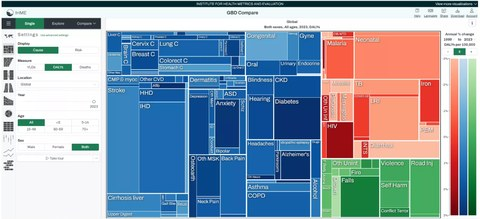
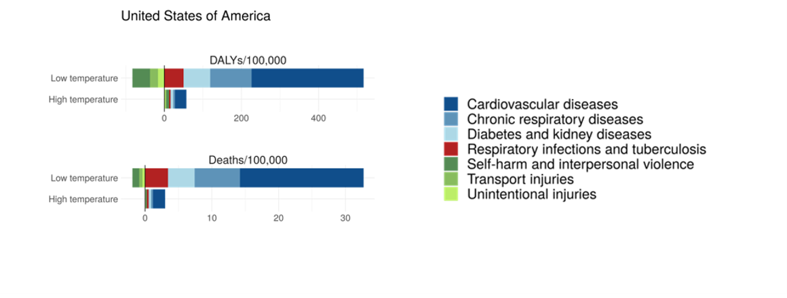

Estimating the global burden of non-optimal temperature and projecting how climate change will reshape health risk.
One of my most significant contributions has been leading the effort to estimate the global burden of disease associated with non-optimal temperature — the first cause-specific, globally coherent estimates of their kind, published in The Lancet. We estimated that 1.87 million deaths were attributable to non-optimal temperature globally in 2023, with the heaviest heat burden in South and Southeast Asia, sub-Saharan Africa, and North Africa and the Middle East, and the heaviest cold burden in Eastern and Central Europe and Central Asia.
Building on this foundation, I am now projecting how a changing climate will reshape health risk in future decades, incorporating non-climatological drivers such as demographic and socioeconomic change alongside shifts in air pollution driven by wildfire activity, and increasing flood and storm frequency. Using CMIP6 climate scenarios paired with epidemiological exposure-response functions, these projections identify the emission pathways, regions, and subgroups most vulnerable to climate-related health harm.
This work is anchored by a $3.7M NIH/NIA R01 grant on past and future temperature-attributable burden in the U.S., and I represent IHME as a partner of the WHO–WMO Global Heat Health Information Network.
Explore further

Explore the interactive GBD Compare data visualization tool from IHME.

1.87 million deaths were attributable to non-optimal temperature globally in 2023.